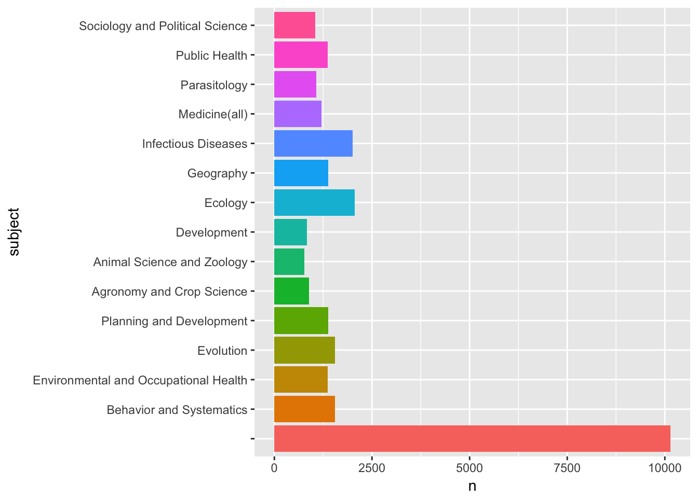

This article discusses the use of the free web service CrossRef to access the scientific literature. We will use data for Kenya as the example with the aim of exploring the issues involved in linking administrative data on research permits with scientific publications in Kenya. The wider context of the discussion is the monitoring of access and benefit-sharing agreements for research involving genetic resources and traditional knowledge under the Nagoya Protocol.
There are two significant challenges involved in linking research permit data with the scientific literature.
The first of these challenges reflects the issue that the scientific literature is dispersed in a range of databases. These databases are typically pay per view and difficult to access without payment to a commercial service provider such as Clarivate Analytics (for Web of Science) or Elsevier (for Scopus).
This situation is beginning to change as a result of the rise of the open access movement. The majority of published scientific research is publicly funded. In response to growing concerns about the costs of access to the outputs of publicly funded research a growing number of governments, including the European Union, have introduced open access requirements. Typically, this involves a requirement to make a copy of a pre-peer review version of an article available in an open access repository. In addition, government funding agencies have increasingly provided extra resources for researchers to pay scientific publishing companies a fee to make a peer-reviewed article open access.
The rise of open access has been accompanied by the growing availability of web services (Application Programming Interfaces or APIs) that provide access to metadata about publications. Typically, metadata includes the title, author names, authors affiliations, subject areas, document identifiers (dois) and in some cases the abstract, author keywords and links to access the full text either free of charge or through payment of a fee to a publisher. Examples of publication databases with APIs include PubMed and CrossRef.
The rise of APIs has also been accompanied by the creation of libraries in a variety of programming languages that allow metadata to be searched and downloaded for analysis. An emerging trend is the use of web services for text mining of metadata. In this section we will use the rcrossref package in R and RStudio developed by rOpenSci to provide access to the CrossRef database of metadata on 80 million publications.
While will focus on the CrossRef API using the rcrossref package we would note the availability of other packages, notably the fulltext package to access API data from PubMed, Entrez, PLOS and others. In the process we will identify some of the strengths and weaknesses of APIs for linking administrative information such as research permits with publication data.
We will explore the use of the CrossRef API using a general search for literature involving Kenya. Note here that we do not focus on individual searches for author names using rcrossref (such as the cr_works() function) in order to focus on the second challenge of mapping names from administrative data into the scientific literature. This challenge has two dimensions.
In the first part of this article we will access the scientific literature for Kenya using R. In the second part of the article we will look at the problem of name cleaning and the use of Vantage Point for matching names. In the next article we will explore the use of ORCID researcher identifiers as a means for automating the linkages between adminsitrative data on research permits and publications.
CrossRef is a non-profit organisation that serves as a clearing house for publishers for the use of digital object identifiers (dois) as persistent identifiers for scientific publications. CrossRef is not a database of scientific publications but can be best understood as a coordinating body or clearing-house for the consistent use of persistent identifiers for a reported 2000 publishing organisations that are members of CrossRef. Further information on CrossRef is available here
CrossRef data on scientific publications essentially consists of three elements
At present CrossRef contains information on 80 million scientific publications including articles, books and book chapters.
Data can be accessed using the crossref api and from a variety of platforms including the rOpenSci rcrossref package in R.
It should be emphasised that CrossRef is not a text based search engine. CrossRef mainly provides metadata based on document identifiers - that is document identifiers are sent to it and standardised information is sent back. However, it is possible to perform very simple text searches in the CrossRef database.
In the image above we included the term Kenya in the search box. When we enter this we see the following results.
What we see here is that there are 27,299 results in total including 23,770 articles and 2,312 book chapters among other resources that possess a persistent identifier. CrossRef also records information on the Year, the Journal, the Category for subjects and the Publisher and Funder Name (not shown).
We can immediately see that some of this information is relevant to ABS monitoring such as the Title, the journal and the Category (e.g. Ecology, Evolution, Behaviour and Systematics or Parasitology).
The test search function in CrossRef API is based on a limited set of DisMax query terms (notably +/-). Thus if we wanted to limit the above search to Kenya and Lakes we would use the term +kenya +lakes)
This radically reduces the number of results by forcing the search to return records that contain the term Kenya AND lakes.
We can also exclude terms by using a query such as kenya !lakes which returns 27,180 results that do not contain the term lakes.
However, our ability to conduct these types of searches using the API is presently limited. For example, the author of this report found no way of reproducing an AND query with the API for Kenya and lakes. It may be that there is a route for such queries, that this is not available with the API or that there is a bug in the API code.
For example, the following queries all produce the same results, 60506 from the API and, regardless of the setting, are returning the results of Kenya OR Lakes.
http://api.CrossRef.org/works?query=kenya%20+lakes http://api.CrossRef.org/works?query=+kenya%20+lakes http://api.CrossRef.org/works?query=kenya++lakes http://api.CrossRef.org/works?query=+kenya++lakes http://api.CrossRef.org/works?query=kenya+-lakes http://api.CrossRef.org/works?query=kenya+!lakes
Therefore, we need to bear in mind that what can be achieved with the website query is not necessarily achievable using the API.
To use the CrossRef API in R we need to start by installing the rcrossref package from RStudio.
install.packages("rcrossref")
install.packages("tidyverse")Next we need to load the package.
library(rcrossref)
library(tidyverse)## Loading tidyverse: ggplot2
## Loading tidyverse: tibble
## Loading tidyverse: tidyr
## Loading tidyverse: readr
## Loading tidyverse: purrr
## Loading tidyverse: dplyr## Conflicts with tidy packages ----------------------------------------------## filter(): dplyr, stats
## lag(): dplyr, statsThe main function that we will use in rcrossref is called cr_works() for CrossRef works. We can run the same query that we ran above as follows.
library(rcrossref)
kenya <- cr_works(query = "kenya")If we inspect kenya it is a list,
str(kenya, max.level = 1)## List of 3
## $ meta :'data.frame': 1 obs. of 4 variables:
## $ data :Classes 'tbl_df', 'tbl' and 'data.frame': 20 obs. of 28 variables:
## $ facets: NULLWe can access the components of the list using $.
kenya$meta$total_results## [1] 27824This tells us that the total number of results referencing Kenya correspond with a web based query in early February 2017. In this article we are using a reference dataset from January 2017 with a slightly lower 27,299 records.
By default the cr_works returns a data.frame with 20 results in the list. We can view this as follows
kenya$data## # A tibble: 20 × 28
## alternative.id container.title
## <chr> <chr>
## 1 Phytocoenologia
## 2 Kenya
## 3 Kenya
## 4 Phytocoenologia
## 5 Phytocoenologia
## 6
## 7 International Journal of Management and Sustainability
## 8 136/84 Tropical Grasslands - Forrajes Tropicales
## 9
## 10
## 11 Current Research in Agricultural Sciences
## 12
## 13
## 14 SpringerReference
## 15 Mammals of Africa : Hedgehogs, Shrews and Bats
## 16 Indians in Kenya
## 17 Kenya Veterinarian
## 18 Maps of the Southern Kenya Rift
## 19 Maps of the Southern Kenya Rift
## 20 Maps of the Southern Kenya Rift
## # ... with 26 more variables: created <chr>, deposited <chr>, DOI <chr>,
## # funder <list>, indexed <chr>, ISBN <chr>, ISSN <chr>, issue <chr>,
## # issued <chr>, link <list>, member <chr>, page <chr>, prefix <chr>,
## # publisher <chr>, reference.count <chr>, score <chr>, source <chr>,
## # subject <chr>, title <chr>, type <chr>, URL <chr>, volume <chr>,
## # assertion <list>, author <list>, `clinical-trial-number` <list>,
## # update.policy <chr>To gain a fuller view use View(cr_kenya$data) in the console. To see just the heading we can use names() to retrieve the column names in the data.frame.
names(kenya$data)## [1] "alternative.id" "container.title"
## [3] "created" "deposited"
## [5] "DOI" "funder"
## [7] "indexed" "ISBN"
## [9] "ISSN" "issue"
## [11] "issued" "link"
## [13] "member" "page"
## [15] "prefix" "publisher"
## [17] "reference.count" "score"
## [19] "source" "subject"
## [21] "title" "type"
## [23] "URL" "volume"
## [25] "assertion" "author"
## [27] "clinical-trial-number" "update.policy"From this sample we can see that we retrieve a range of fields including the URL, the document identifier (DOI), the author, funder, title and subject.
The question now becomes whether we can retrieve more data from CrossRef.
The maximum number of results that can be returned from a single query to CrossRef is 1,000. In the case of the Kenya data we would therefore need to make 27 queries. However, the CrossRef API also permits deep paging (fetching results from multiple pages). We can retrieve all the results by setting the cursor to the wildcard * and the cursor_max to the total results. Note that the cursor and the cursor_max arguments must appear together for this to work. Because it can take a while to retrieve the results we will add a progress bar using .progress to indicate how far along the query is.
Let’s try retrieving the full results, this time using a higher value than our total results (27,299) for Kenya. The API should stop when it reaches the end and return the 27,299 results.
library(rcrossref)
cr_kenya <- cr_works(query="kenya", cursor = "*", cursor_max = 28000, .progress = "text")This will take some time to return the results but will work. We can now extract the data.frame with the full results for Kenya. A check of the number of rows reveals the expected 27,299 rows.
Next we can inspect the dataset using View.
View(cr_kenya)We can summarise this data using dplyr from the tidyverse packages installed earlier, to gain an overview of the data. We will start with subjects.
library(tidyverse)
cr_kenya %>% count(subject, sort = TRUE)## # A tibble: 1,469 × 2
## subject
## <chr>
## 1
## 2 Medicine(all)
## 3 Ecology, Evolution, Behavior and Systematics
## 4 Parasitology,Infectious Diseases
## 5 Biochemistry, Genetics and Molecular Biology(all),Agricultural and Biologic
## 6 Public Health, Environmental and Occupational Health,Parasitology,Infectiou
## 7 General
## 8 Geography, Planning and Development,Development
## 9 Public Health, Environmental and Occupational Health
## 10 Food Animals,Animal Science and Zoology
## # ... with 1,459 more rows, and 1 more variables: n <int>We can see that the top result is blank. We can also see that different subjects are grouped together in some of the counts. We would like to separate these out for a more accurate summary.
library(tidyverse)
cr_kenya %>% separate_rows(subject, sep = ",") %>%
count(subject, sort = TRUE) -> subjects # output
subjects## # A tibble: 315 × 2
## subject n
## <chr> <int>
## 1 10147
## 2 Ecology 2052
## 3 Infectious Diseases 2002
## 4 Behavior and Systematics 1551
## 5 Evolution 1551
## 6 Planning and Development 1375
## 7 Geography 1375
## 8 Environmental and Occupational Health 1364
## 9 Public Health 1364
## 10 Medicine(all) 1209
## # ... with 305 more rowsWe still have a blank row as the top score indicating that our other categories will be under-represented and therefore inaccurate (time series may help to clarify if earlier records lack subjects or whether this is a more general problem). We can quickly visualise the top results with the ggplot2 package.
library(tidyverse)
library(ggplot2)
subjects[1:15, ] %>%
ggplot2::ggplot(aes(subject, n, fill = subject)) +
geom_bar(stat = "identity", show.legend = FALSE) +
coord_flip()
We can clearly see a number of relevant subject areas for access and benefit-sharing such as Parasitology, the Medicine general category, Infectious diseases and so on.
We might also want to summarise the data by the type.
library(tidyverse)
cr_kenya %>%
count(type, sort = TRUE)## # A tibble: 14 × 2
## type n
## <chr> <int>
## 1 journal-article 23770
## 2 book-chapter 2312
## 3 dataset 395
## 4 proceedings-article 382
## 5 component 91
## 6 book 88
## 7 report 65
## 8 monograph 63
## 9 other 53
## 10 reference-entry 47
## 11 dissertation 24
## 12 posted-content 4
## 13 reference-book 4
## 14 report-series 1We can readily see that the bulk of the contents are journal articles followed by book chapters.
We can also quickly visualise publication trends over time using geom_line. Visualizing trends over time is a bit tricky because there is no obvious publication date in the return from the CrossRef API. Instead we are presented with date fields for created and deposited, indexed, and issued. From a review of the API documentation the issued field appears to be the best candidate pending further clarification.
Inspection of the data reveals that the issued column (the data of issue of an identifier corresponding with a publication) is inconsistent. On some occasions it contains the YYYY on others YYYY-MM and on others YYYY-MM-DD. In addition there are some blanks in the data that will cause problems. So we will need to separate out that field into a new column with year.
library(tidyr)
library(stringr)
cr_kenya$issue_blank <- str_detect(cr_kenya$issued, "") # detect blanksNext we will create a new data frame with the dates to graph.
library(dplyr)
cr_kenya_dates <- filter(cr_kenya, issue_blank == TRUE)We can now process the data and draw a quick line plot with ggplot2. We will send this to the plotly function ggplotly which allows us to view the data points on hover. ggplot2 is part of the tidyverse and so is installed above but you may need to install.package("plotly") and then load the library.
library(dplyr)
library(ggplot2)
library(plotly)
cr_kenya_dates %>%
separate(., issued, c("year", "month", "date"), sep = "-", fill = "right") %>%
count(year) %>%
filter(year >= 1990 & year <= 2016) %>%
ggplot(aes(x = year, y = n, group = 1)) +
scale_x_discrete(breaks=seq(1990, 2015, 5)) +
geom_line() -> out # data out
ggplotly(out)We have a separate list of researchers who at one time or another have received a permit to conduct research in Kenya. What we would like to do, is identify the researchers in the CrossRef data as a basis for compiling a data set of their publications. That data could then serve as a resource for other researchers and help demonstrate the value of biodiversity related research in countries such as Kenya.,
We now want to identifier researchers who have received a research permit in the data. Let’s load the researcher data from the project folder.
load("data/permits.rda")Note here that our data will be limited to those cases where an author will also mention the word Kenya in the title of a publication. So, we need to bear in mind that our publication data will be incomplete and will not capture the full range of publications by a permit holder. The object of this exercise is simply to demonstrate methods for linking permit and researcher data.
We will do some data preparation to make our lives easier. First we will convert the surname_firstname to lower case.
permits$surname_firstname_lower <- tolower(permits$res_surname_firstname)Second we will add res_ to the researcher names so that we know we are dealing with a researcher when matching with the publication data. This has been pre-prepared and so will not be run.
library(dplyr)
permits %>% rename("res_first_name" = first_name, "res_second_name" = second_name, "res_surname" = surname, "res_surname_firstname" = surname_firstname, "res_surname_firstname_lower" = surname_firstname_lower) -> permits # outputA standard procedure in name matching (except where using string distance algorithms which automate the procedure) is to match on surname, given names and initials.
First we will attempt a surname match from the permits data.
We set up the data for comparison by converting the family name data in the CrossRef dataset to lower case and do the same for the researcher surname field.
cr_kenya_authors$auth_family_lower <- tolower(cr_kenya_authors$auth_family)
permits$res_surname_lower <- tolower(permits$res_surname)We now have two comparable fields with lowercase entries.
Let’s try comparing the two. This will return a logical true or false for matches and we just show the first 20 rows.
library(dplyr)
permits$res_surname_lower %in% cr_kenya_authors$auth_family_lower %>%
head(20)## [1] FALSE TRUE FALSE TRUE FALSE TRUE TRUE FALSE FALSE TRUE TRUE
## [12] TRUE TRUE FALSE FALSE TRUE TRUE TRUE TRUE FALSETo join these two tables together we actually need a shared field. We will use the respective family_lower field from the two datasets and create a new shared field called family_lower.
cr_kenya_authors$family_lower <- cr_kenya_authors$auth_family_lower
permits$family_lower <- permits$res_surname_lowerNext let’s use inner_join to join the tables together. An inner join will only include those that match in both tables by the family_lower field.
library(dplyr)
inner_family <- inner_join(cr_kenya_authors, permits, by = "family_lower")From our 91,303 author rows we now have matches for 9,700 on the author names. We would benefit from cutting down the size of the table.
library(dplyr)
inner_family %>% select(DOI, ISBN, ISSN, subject, title, subtitle, type, URL, subject, affiliation.name, ORCID, auth_full_name, auth_given, auth_family, auth_full_nopunct, auth_given_nopunct, auth_family_lower, project_title, res_first_name, res_second_name, res_surname, res_surname_firstname, res_surname_lower, res_surname_firstname_lower, family_lower) -> short_inner_family # outputload("short_inner_family.rda")Having identified shared surnames between the permit and the publication data we can now attempt to identify shared first names. However, it is important to note that scientific publications commonly only use the author initials as part of the name. For that reason we will convert the CrossRef given_name to its first initial and do the same for the permit data first_name.
library(stringr)
# extract the first initial from author names
short_inner_family$auth_initial <- str_extract(short_inner_family$auth_given, "[^ ]") %>%
str_trim(side = "both")
# extract the first initial from researcher names
short_inner_family$res_initial <- str_extract(short_inner_family$res_first_name, "[^ ]") %>% str_trim(side = "both")We are now in a position to compare the two. This time we will need to use which() for the matching and then create a logical test. In the process we will create some temporary tables which we will then remove.
library(dplyr)
# turn row.names to rows
short_inner_family$rows <- row.names(short_inner_family)
# match initials and add logical column
tmp <- which(short_inner_family$auth_initial == short_inner_family$res_initial) %>%
as.character()
short_inner_family$initial_match <- short_inner_family$rows %in% tmp
rm(tmp)
# match first and given names
# convert researcher first name to lower
short_inner_family$res_first_name_lower <- tolower(short_inner_family$res_first_name)
# identify matches
tmp1 <- which(short_inner_family$auth_given_nopunct == short_inner_family$res_first_name_lower) %>%
as.character()
# add logical column
short_inner_family$given_first_match <- short_inner_family$rows %in% tmp1
rm(tmp1)Next we create a new table where the match on first initials is TRUE (as this field is likely to contain the largest number of results but will also be the noisiest).
library(dplyr)
initial_match <- filter(short_inner_family, initial_match == "TRUE")This reduces the table to 1,218 results. Next we will filter the initial data to show those cases where the given first name match is also TRUE.
library(dplyr)
given_match <- filter(initial_match, given_first_match == "TRUE")This produces 529 results. We are quite solid with the 529 given matches because the surname and the first part of the first name must match. Here we need to be careful that when dealing with names we should beware of false positives (homonyms or lumps) where common names that do not correspond with the same person are lumped together. We also need to be aware of situations where there are name reversals, that is where a first name appears as a second name in one table and in reverse in another.
There are limits to how far we can go with accurate name cleaning in R, although the stringdist package looks promising, and to go further using free tools we might want to proceed using Open Refine. For a tutorial on name cleaning with Open Refine see the WIPO Manual on Open Source Patent Analytics.
To go further we will use specialist text mining and analytics software VantagePoint. VantagePoint is paid for software that is available in student and academic editions. A key advantage of VantagePoint over work in R or other programming languages is that it is possible to easily review and group name matches and to use match criteria and fuzzy logic matching for name cleaning. In short, accurate name cleaning is simply easier to do in VantagePoint than any other tool so far tested when dealing with tens of thousands of names.
We have two options that we can use with Vantage Point. We can simply write the existing full dataset to a .csv or excel file from R and import it into Vantage Point. Or, alternatively we can do the same with the shorter initial match or given match tables.
For the purpose of experimentation we exported the entire table to a .csv file and then imported it into Vantage Point. To export the entire table we use:
readr::write_csv(cr_kenya_authors, "cr_kenya_authors.csv")In the image below we see the complete dataset in Vantage Point view.
Next, we combine the author names and the researcher names fields into one field consisting of 53,043 names and then review matches between the researcher names and author names that are assigned to a review group. The image below shows the results of this exercise with the titles of articles on the left and the research project title on the right.
In this case we can see that the researcher has received a permit for the conservation of small mammals in Kenyan forests. There is a close correspondence between this topic and the titles of articles such as Bartonella spp. in Bats, Kenya.
However, it is also important to bear in mind that this will not always be the case. For example, David Bukusi (as bukusi munyikombo david) has received a research permit for the Assessment of Visitor Numbers on Activity Patterns of Carnivores Activity: A Case of Nairobi Orphanage. However, an apparent author match on bukusi david reveals titles that focus on HIV related issues such as Assisted partner notification services to augment HIV testing and linkage to care in Kenya: study protocol for a cluster randomized trial. This is a case of a false positive match that can only be detected by comparing the subject area of the research permit and the subject area of the article.
False positives (on shared name matches or lumps) are more of a problem to address than splits. For example, in some cases a shared name may contain valid results and contain false results arising from the grouping of distinct persons with the same name together.
The easiest way to address this is to use other fields, such as author affiliations and subject areas, to match valid records. However, it is also important to bear in mind that researchers may change subject areas over time from project to project. Therefore when using subject area matches (as for this permit data) a degree of judgement is required along with accepting that data cleaning is typically a multi-step process.
The conclusion of this process involves excluding false positives at the review stage and then combining (using fuzzy logic matching in VantagePoint) variant names into single names. This reduces our dataset to a total of 89 researcher names who are also present in the scientific literature from our raw starting point of 410 unique researcher names. In other words, using a raw CrossRef dataset for Kenya we were able to identify 22% of our researcher names in publications. Let’s load that dataset.
If we inspect the cr_permits_clean dataset we will observe two main points. The first of these is that while there are 89 unique author names, there are 183 variant names. In other words, there are a large number of variant spellings of author names across this relatively small set.
library(dplyr)
cr_permits_clean %>%
count(auth_res_combined_clean) %>%
arrange(desc(n))## # A tibble: 89 × 2
## auth_res_combined_clean n
## <chr> <int>
## 1 sang rosemary 46
## 2 kanyari paul 27
## 3 ofula victor 20
## 4 cerling thure e 19
## 5 agwanda bernard 14
## 6 cords marina 14
## 7 masiga daniel 13
## 8 gakuya francis 11
## 9 gichuki nathan n 11
## 10 isbell ann lynne 11
## # ... with 79 more rowsIn the data view below we can an insight into the variations of names where agwanda bernard is also agwanda bernard risky, agwanda b r, and agwanda b. These variants would increase if we had not previously regularised the case and removed punctuation.
library(dplyr)
cr_permits_clean %>%
select(auth_res_combined_clean, auth_res_combined_vars) %>%
arrange(auth_res_combined_clean)## # A tibble: 399 × 2
## auth_res_combined_clean auth_res_combined_vars
## <chr> <chr>
## 1 agwanda bernard agwanda bernard risky
## 2 agwanda bernard agwanda b r
## 3 agwanda bernard agwanda bernard
## 4 agwanda bernard agwanda b
## 5 agwanda bernard agwanda bernard
## 6 agwanda bernard agwanda bernard
## 7 agwanda bernard agwanda bernard
## 8 agwanda bernard agwanda bernard
## 9 agwanda bernard agwanda bernard risky
## 10 agwanda bernard agwanda bernard
## # ... with 389 more rowsIn this section we have focused on the use of a free API to retrieve data about research in Kenya and then to map a set of research permit holders into the author data.
In the process using a simple approach involving harmonising and matching names we have demonstrated that name matching between datasets involves significant challenges. A number of options exist to address these challenges.
stringdist package in R suggests a way forward in implementing this method.However, an alternative approach is also beginning to emerge that focuses on the use of unique author identifiers. We will turn to testing this in the next section using ORCID identifiers.
In this section we used the CrossRef API service to access the scientific literature about Kenya using the rcrossref package in R. We then explored the data and split the data to reveal author names. In the next step we started the process of basic matching of a set of researcher names from research permits with author names in the scientific literature. In the process we encountered the main problems involved in name matching, splits or variants of names and lumps or cases where the same name is shared by multiple persons.
Our approach demonstrates proof of concept and the issues encountered in mapping research permit holder names into the scientific literature. However, it is important to also recognise the following limitations.
CrossRef is not a text based search engine and the ability to conduct text based searches is presently crude. Furthermore, we can only search a very limited number of fields and this will inevitably result in lower returns than commercial databases such as Web of Science (where abstracts and author keywords are available). It may be that the use of a number of different APIs (such as for PubMed) will improve data coverage and this could be tested against Web of Science or Scopus results in future.
Matching research permit holder names with author names involves disambiguation challenges for variant names and lumped author names. Automation of these steps will require closer attention to name matching algorithms and testing existing approaches to name author disambiguation.
Name matching is an iterative process where false positives are the key problem.
In the next section we will focus on exploring the use of the ORCID system using the same data to examine the contribution of researcher identifiers to monitoring access and benefit-sharing.